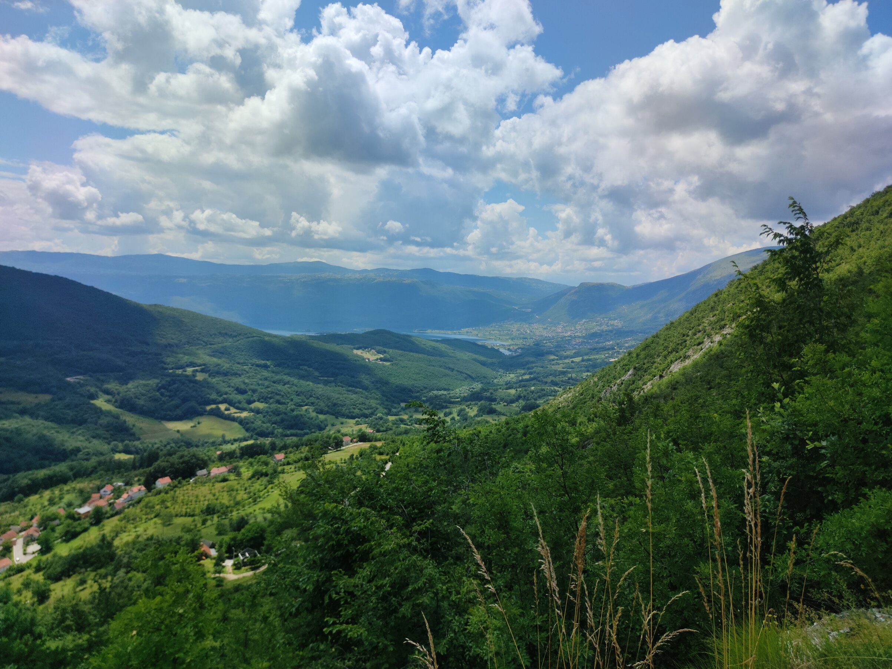

I was passing-through this city, which has a lot of mountain roads. At the time of my passing, it had snowed recently, which created breathtaking views. There was a viewing stop next to a mountain road, which gives one the opportunity to look down on the countryside.
Me
This is the traveller in question, me, Yusuf Kavranoglu, photographed in different countries to prove that I like travelling.
-
In Taiwan, 2023 
-
In Bosnia, 2023 
-
In Belarus, me and Lenin (me on the front), 2021 
-
In China, 2019 
Places
Images
-
A photo from the viewpoint, taken from Google Maps. 